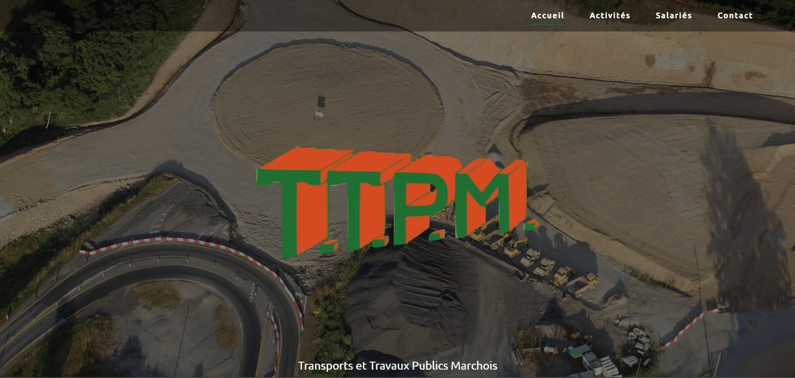

Projet TTPM
Contexte:
L’entreprise TTPM est spécialisé dans le transport et les travaux publics, TTPM possède déjà un site web lui
permettant de gagener en visibilité ainsi que de gérer les plannings des salariés. Cependant, l'entreprise souhaite
ajouter une fonctionnalité permettant de gérer les ressources humaines de l'entreprise.
Réalisation:
Dans le cadre d'un stage de cinq semaines, il était demandé la réalisation de la partie ressources humaines du site comprenant:
partie administrateur:
-une partie informations salariés donnant accès au informations ainsi que de modifier, imprimer et supprimer les informations des salariés
-une partie pour ajouter des salariés
-une partie permettant la gestion des compétences des salariés
-un espace de consultation des notifications
partie salarié:
-une partie informations personnelles
-un espace de consultation des notifications

Compétences travaillées: